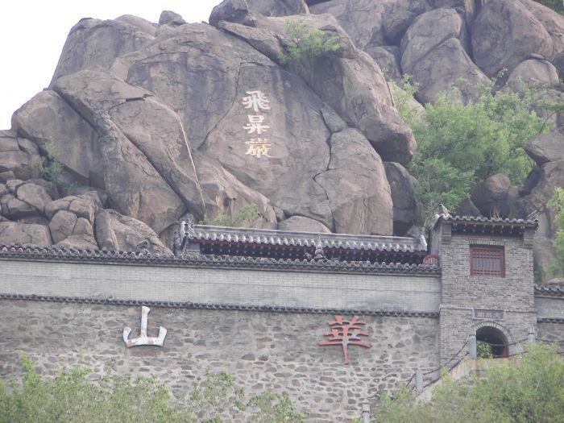
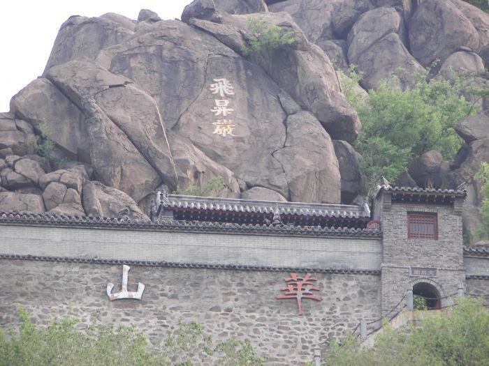

济南华山
华山又名华不注山，金舆山。地处济南市区东北，位于黄河以南，小清河以北，二环东路以东。古时称“华不（fǔ）注”，为历史名山。盖其名取自于《诗经·小雅·常棣》，其诗曰：“常（棠）棣之华，鄂不䎬䎬”。“华”即“花”，“鄂不”即“萼跗”，谓之花蒂。山名“华不注”，意为此山如花跗注于水中。
华山海拔197米，素以奇秀著称。平地突起一峰，宛如利剑一把拔地而起，很多人认为华不注是“花骨朵”的转音。因其形状如未开放的莲花而得名,被称作出水芙蓉。

华山又名华不注山，金舆山。地处济南市区东北，位于黄河以南，小清河以北，二环东路以东。古时称“华不（fǔ）注”，为历史名山。盖其名取自于《诗经·小雅·常棣》，其诗曰：“常（棠）棣之华，鄂不䎬䎬”。“华”即“花”，“鄂不”即“萼跗”，谓之花蒂。山名“华不注”，意为此山如花跗注于水中。
华山海拔197米，素以奇秀著称。平地突起一峰，宛如利剑一把拔地而起，很多人认为华不注是“花骨朵”的转音。因其形状如未开放的莲花而得名,被称作出水芙蓉。
